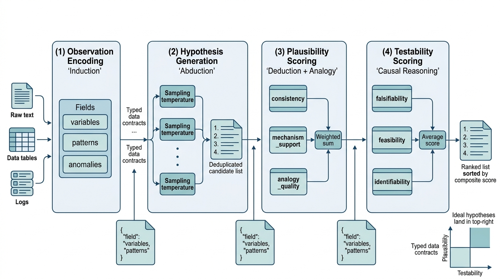

"I generated forty-seven hypotheses before breakfast. The hard part was not generating them. The hard part was admitting that forty-six of them were wrong and the remaining one was untestable."
An Abductive Engine With No Off Switch
This section is the chapter's recipe: a complete, working pipeline that takes an observed phenomenon, generates abductive explanations using a language model, scores each explanation by plausibility and testability using the reasoning machinery from the previous three sections, and outputs a ranked list of hypotheses ready for experimental design. The pipeline embodies the discovery cycle from Section 4.1 (five reasoning modes working together), guards against the LLM failure modes cataloged in Section 4.2 (multi-sample verification, structured output), and connects to the causal framework from Section 4.3 (testability requires interventional thinking). This pattern becomes a core module of the Discovery Workbench architecture introduced in Chapter 6.
1. Pipeline Architecture
The reasoning pipeline has four stages, each mapping to a reasoning mode from Section 4.1. Figure 4.4.1 illustrates the four-stage reasoning pipeline architecture:

When a drug screen returns a puzzling pattern, how do you move from "that is interesting" to a ranked shortlist of testable hypotheses before the next lab meeting? Individual reasoning steps are unreliable in isolation: generating ideas, checking consistency, and assessing testability each fail in characteristic ways. Chaining them into a sequential pipeline with explicit data contracts (agreed-upon data structures that each stage must produce and consume) lets each stage compensate for the others. Each stage reads a structured data object and applies one reasoning mode (induction, abduction, deduction, or causal analysis) via large language model (LLM) prompts with constrained output schemas. It then emits a richer object for the next stage, producing an auditable, reproducible ranking at the end.
- Observation Encoding (induction): structure the raw data into a formal observation statement with identified patterns and anomalies
- Hypothesis Generation (abduction): produce multiple candidate explanations using an LLM with chain-of-thought prompting
- Plausibility Scoring (deduction + analogy): evaluate each hypothesis against background knowledge, checking logical consistency and analogical support
- Testability Scoring (causal reasoning): assess whether each hypothesis makes falsifiable predictions and whether the causal effect is identifiable
The output is a ranked list of hypotheses, each annotated with plausibility score, testability score, suggested experiments, and reasoning traces. This structure feeds directly into the automated experiment design systems of Chapter 46. In short: the pipeline converts a vague observation into a ranked shortlist where every hypothesis carries its own evidence, its own weaknesses, and a concrete next experiment. Figure 4.6 illustrates the four stages and the data objects that flow between them.
from dataclasses import dataclass, field
from enum import Enum, auto
import json
@dataclass
class Observation:
"""A structured scientific observation."""
description: str
domain: str
variables: list[str]
patterns: list[str] # Identified regularities
anomalies: list[str] # Unexpected findings
data_summary: str # Statistical or qualitative summary
@dataclass
class Hypothesis:
"""A scored hypothesis with metadata for downstream processing."""
statement: str
mechanism: str # Proposed causal mechanism
predictions: list[str] # Testable predictions
plausibility: float # 0-1 score
testability: float # 0-1 score
composite_score: float # Weighted combination
reasoning_chain: str # Full chain-of-thought for audit
suggested_experiments: list[str] = field(default_factory=list)
analogies: list[str] = field(default_factory=list)
@property
def rank_score(self) -> float:
"""Combined score for ranking: plausibility * testability."""
return self.plausibility * self.testability
@dataclass
class PipelineResult:
"""Complete output of the reasoning pipeline."""
observation: Observation
hypotheses: list[Hypothesis]
metadata: dict = field(default_factory=dict)
def ranked(self) -> list[Hypothesis]:
"""Return hypotheses sorted by composite score, descending."""
return sorted(
self.hypotheses,
key=lambda h: h.composite_score,
reverse=True
)Observation separates patterns from anomalies, Hypothesis carries plausibility and testability scores with full reasoning chains for auditability, and PipelineResult sorts hypotheses by composite score for downstream ranking.These data structures define the contracts between stages; each stage reads one structure, enriches it, and passes the result forward, starting with the conversion of raw text into a structured observation.
2. Stage 1: Observation Encoding
Raw observations arrive as unstructured text, data tables, or experimental logs. The first stage converts them into the structured Observation format, identifying the key variables, patterns, and anomalies that the hypothesis generator will address. This stage performs inductive reasoning: extracting regularities and surprises from data.
import anthropic
client = anthropic.Anthropic()
def encode_observation(raw_text: str, domain: str) -> Observation:
"""Convert unstructured observation text into a structured Observation.
Uses an LLM to extract variables, patterns, and anomalies,
then validates the extraction against the raw text.
"""
response = client.messages.create(
model="claude-sonnet-4-20250514",
max_tokens=2048,
system=(
"You are a scientific observation encoder. "
"Extract structured information from raw observations. "
"Respond in JSON format with these fields: "
"variables (list of strings), "
"patterns (list of identified regularities), "
"anomalies (list of unexpected findings), "
"data_summary (brief statistical summary)."
),
messages=[{
"role": "user",
"content": (
f"Domain: {domain}\n\n"
f"Raw observation:\n{raw_text}\n\n"
"Extract the structured observation. "
"Be precise about what is observed vs. inferred."
)
}]
)
# Parse the JSON response
text = response.content[0].text
# Extract JSON from potential markdown code fences
if "```json" in text:
text = text.split("```json")[1].split("```")[0]
elif "```" in text:
text = text.split("```")[1].split("```")[0]
parsed = json.loads(text)
return Observation(
description=raw_text,
domain=domain,
variables=parsed.get("variables", []),
patterns=parsed.get("patterns", []),
anomalies=parsed.get("anomalies", []),
data_summary=parsed.get("data_summary", "")
)
# Example observation
obs = encode_observation(
raw_text=(
"In our screen of 200 kinase inhibitors against a panel of "
"12 cancer cell lines, compound X-47 showed IC50 < 10nM "
"against 3 cell lines (A549, HCT116, MCF7) but was inactive "
"(IC50 > 10uM) against the remaining 9. The 3 sensitive lines "
"all carry KRAS G12D mutations, but 2 of the 9 resistant lines "
"also carry KRAS G12D. The sensitive lines also show elevated "
"phospho-ERK levels compared to both resistant KRAS-mutant and "
"KRAS-wild-type lines."
),
domain="cancer pharmacology"
)
print(f"Variables: {obs.variables}")
print(f"Patterns: {obs.patterns}")
print(f"Anomalies: {obs.anomalies}")Observation for hypothesis generation.In the example above, IC50 (where IC50 is the half-maximal inhibitory concentration, the drug dose needed to reduce cell viability by 50%) distinguishes sensitive from resistant cell lines, while KRAS G12D (a specific point mutation in the KRAS oncogene, common in several cancers) and phospho-ERK (the phosphorylated, active form of the ERK signaling protein downstream of KRAS) are the molecular features that candidate hypotheses must explain.
3. Stage 2: Hypothesis Generation
The hypothesis generator uses abductive reasoning to propose candidate explanations. Following the reliability principles from Section 4.2, we sample multiple candidates and require each to specify a mechanism, testable predictions, and potential analogies to known phenomena.
def generate_hypotheses(
observation: Observation,
n_hypotheses: int = 5,
n_samples: int = 3
) -> list[dict]:
"""Generate candidate hypotheses via abductive reasoning.
Samples multiple times per hypothesis slot to increase
diversity and catch reasoning failures (Section 4.2).
Args:
observation: Structured observation from Stage 1
n_hypotheses: Number of distinct hypotheses to generate
n_samples: Samples per hypothesis for self-consistency
Returns:
List of hypothesis dicts with mechanism, predictions, analogies
"""
system_prompt = f"""You are a scientific hypothesis generator specializing
in {observation.domain}. Given an observation with identified patterns and
anomalies, propose candidate explanations using abductive reasoning.
For each hypothesis, provide:
1. STATEMENT: A clear, falsifiable claim (one sentence)
2. MECHANISM: The proposed causal mechanism (2-3 sentences)
3. PREDICTIONS: At least 3 testable predictions that follow from this hypothesis
4. ANALOGIES: Similar phenomena in other domains that support this mechanism
5. WEAKNESSES: What evidence would falsify this hypothesis
Respond in JSON format as a list of hypothesis objects."""
user_prompt = f"""Observation:
{observation.description}
Identified patterns: {json.dumps(observation.patterns)}
Anomalies: {json.dumps(observation.anomalies)}
Key variables: {json.dumps(observation.variables)}
Generate {n_hypotheses} distinct, scientifically grounded hypotheses
that explain BOTH the patterns and the anomalies. Prefer mechanistic
explanations over purely statistical ones. Rank them from most to
least plausible based on existing domain knowledge."""
all_candidates = []
for sample_idx in range(n_samples):
response = client.messages.create(
model="claude-sonnet-4-20250514",
max_tokens=4096,
temperature=0.8 + (sample_idx * 0.1), # Vary temperature
system=system_prompt,
messages=[{"role": "user", "content": user_prompt}]
)
text = response.content[0].text
if "```json" in text:
text = text.split("```json")[1].split("```")[0]
elif "```" in text:
text = text.split("```")[1].split("```")[0]
try:
candidates = json.loads(text)
if isinstance(candidates, list):
all_candidates.extend(candidates)
except json.JSONDecodeError:
continue # Skip malformed responses
# Deduplicate by statement similarity (simple heuristic)
seen_statements = set()
unique_candidates = []
for c in all_candidates:
statement = c.get("statement", c.get("STATEMENT", ""))
# Normalize for dedup
key = statement.lower().strip()[:80]
if key not in seen_statements:
seen_statements.add(key)
unique_candidates.append(c)
return unique_candidates[:n_hypotheses * 2] # Keep extras for scoring
# Generate hypotheses for our kinase inhibitor observation
raw_hypotheses = generate_hypotheses(obs, n_hypotheses=5, n_samples=2)
print(f"Generated {len(raw_hypotheses)} unique candidate hypotheses")The hypothesis generator asks for weaknesses alongside predictions. This is not a formality. Research on LLM reasoning (Turpin et al., 2023) shows that models generating only supporting arguments tend to produce overconfident, unfalsifiable hypotheses. Requiring the model to articulate what would falsify each hypothesis forces it into a more balanced abductive mode and produces hypotheses that are easier to score in the next stage. This pattern mirrors the scientific norm of stating null hypotheses and pre-registering falsification criteria.
With candidate hypotheses now carrying explicit mechanisms, predictions, and self-identified weaknesses, the next stage puts those components to quantitative use by scoring how well each explanation holds up against established knowledge.
4. Stage 3: Plausibility Scoring
Plausibility scoring combines deductive consistency checks with analogical support. A hypothesis is plausible when it (a) does not contradict known facts, (b) aligns with established mechanisms in the domain, and (c) has structural analogues in related domains. The following weighted score formalizes this:
$$ \text{plausibility}(H) = w_c \cdot \text{consistency}(H) + w_m \cdot \text{mechanism\_support}(H) + w_a \cdot \text{analogy\_score}(H) $$where \(w_c + w_m + w_a = 1\). Consistency is scored on a continuous 0-to-1 scale, where 1.0 means fully consistent with known facts and values near 0 indicate direct contradiction. Because consistency carries the largest weight (\(w_c = 0.4\)), a low consistency score heavily penalizes the composite, though it does not impose a hard veto. Mechanism support and analogy score are continuous, assessed by the LLM with structured rubrics.
Mental Model
Think of the plausibility and testability scores as two axes on a restaurant review. Plausibility is like taste: does the dish make sense given what you know about flavor combinations, and does it satisfy? Testability is like the recipe being reproducible: can someone else follow the instructions and get the same result? A dish that tastes wonderful but has no written recipe (high plausibility, low testability) cannot spread beyond one kitchen. A dish with a precise recipe that tastes terrible (high testability, low plausibility) will be faithfully reproduced and faithfully rejected. The composite score favors hypotheses that are both convincing and verifiable, just as a great restaurant review requires both a delicious meal and a recipe others can follow.
def score_plausibility(
hypothesis: dict,
observation: Observation,
background_knowledge: str = ""
) -> tuple[float, str]:
"""Score a hypothesis for plausibility using deductive and analogical checks.
Returns (score, reasoning) where score is in [0, 1].
"""
h_statement = hypothesis.get("statement", hypothesis.get("STATEMENT", ""))
h_mechanism = hypothesis.get("mechanism", hypothesis.get("MECHANISM", ""))
h_analogies = hypothesis.get("analogies", hypothesis.get("ANALOGIES", []))
prompt = f"""Evaluate the plausibility of this scientific hypothesis.
HYPOTHESIS: {h_statement}
PROPOSED MECHANISM: {h_mechanism}
DOMAIN: {observation.domain}
OBSERVATION IT EXPLAINS: {observation.description}
PROPOSED ANALOGIES: {json.dumps(h_analogies)}
{f'BACKGROUND KNOWLEDGE: {background_knowledge}' if background_knowledge else ''}
Score each dimension from 0.0 to 1.0:
1. CONSISTENCY (does it contradict known facts in {observation.domain}?):
1.0 = fully consistent, 0.0 = contradicts established knowledge
2. MECHANISM_SUPPORT (is the proposed mechanism well-supported?):
1.0 = mechanism is well-established
0.5 = mechanism is plausible but unproven
0.0 = mechanism has no empirical support
3. ANALOGY_QUALITY (are the analogies structurally valid?):
1.0 = deep structural analogy with validated mechanisms
0.5 = surface-level similarity
0.0 = no valid analogies
Respond in JSON: {{"consistency": float, "mechanism_support": float,
"analogy_quality": float, "reasoning": "brief justification"}}"""
response = client.messages.create(
model="claude-sonnet-4-20250514",
max_tokens=1024,
temperature=0.2, # Low temperature for scoring consistency
messages=[{"role": "user", "content": prompt}]
)
text = response.content[0].text
if "```json" in text:
text = text.split("```json")[1].split("```")[0]
elif "```" in text:
text = text.split("```")[1].split("```")[0]
try:
scores = json.loads(text)
except json.JSONDecodeError:
return 0.5, "Scoring failed; default to moderate plausibility"
# Weighted combination (consistency is most important)
w_c, w_m, w_a = 0.4, 0.35, 0.25
composite = (
w_c * scores.get("consistency", 0.5) +
w_m * scores.get("mechanism_support", 0.5) +
w_a * scores.get("analogy_quality", 0.5)
)
return composite, scores.get("reasoning", "")5. Stage 4: Testability Scoring
A hypothesis that cannot be tested is not useful for science, no matter how plausible. Testability scoring evaluates whether a hypothesis makes falsifiable predictions and whether the proposed causal effect is identifiable (meaning the effect can be uniquely determined from the experimental design, without unresolvable confounders) from feasible experiments. This stage applies the causal reasoning framework from Section 4.3.
def score_testability(
hypothesis: dict,
observation: Observation
) -> tuple[float, list[str]]:
"""Score a hypothesis for testability using causal reasoning criteria.
Evaluates:
1. Falsifiability: Does the hypothesis make specific, falsifiable predictions?
2. Feasibility: Can the required experiments be conducted?
3. Identifiability: Can the causal effect be identified from the proposed design?
Returns (score, suggested_experiments).
"""
h_statement = hypothesis.get("statement", hypothesis.get("STATEMENT", ""))
h_predictions = hypothesis.get("predictions", hypothesis.get("PREDICTIONS", []))
h_mechanism = hypothesis.get("mechanism", hypothesis.get("MECHANISM", ""))
prompt = f"""Evaluate the testability of this scientific hypothesis.
HYPOTHESIS: {h_statement}
MECHANISM: {h_mechanism}
PREDICTIONS: {json.dumps(h_predictions)}
DOMAIN: {observation.domain}
Evaluate and score each dimension from 0.0 to 1.0:
1. FALSIFIABILITY: Are the predictions specific enough to be falsified?
1.0 = precise quantitative predictions with clear falsification criteria
0.5 = qualitative predictions that are directional but not precise
0.0 = vague predictions that could accommodate any outcome
2. FEASIBILITY: Can the required experiments be conducted with
current technology and reasonable resources?
1.0 = standard experimental protocols exist
0.5 = experiments are possible but require significant resources
0.0 = experiments are currently impossible
3. IDENTIFIABILITY: Can the causal effect be cleanly identified?
Consider confounders, mediators, and whether the intervention
can be isolated from other variables.
1.0 = clean intervention possible, no confounders
0.5 = confounders exist but can be controlled for
0.0 = fundamental identification problems (unobservable confounders,
no valid instruments)
4. SUGGESTED_EXPERIMENTS: List 2-3 specific experiments that would
test this hypothesis, each with expected outcomes under H0 and H1.
Respond in JSON: {{"falsifiability": float, "feasibility": float,
"identifiability": float, "suggested_experiments": [str],
"reasoning": "brief justification"}}"""
response = client.messages.create(
model="claude-sonnet-4-20250514",
max_tokens=1500,
temperature=0.2,
messages=[{"role": "user", "content": prompt}]
)
text = response.content[0].text
if "```json" in text:
text = text.split("```json")[1].split("```")[0]
elif "```" in text:
text = text.split("```")[1].split("```")[0]
try:
scores = json.loads(text)
except json.JSONDecodeError:
return 0.5, ["Scoring failed"]
# Equal weighting for testability dimensions
composite = (
scores.get("falsifiability", 0.5) +
scores.get("feasibility", 0.5) +
scores.get("identifiability", 0.5)
) / 3.0
experiments = scores.get("suggested_experiments", [])
return composite, experimentsConsider our kinase inhibitor observation from Stage 1. Two candidate hypotheses might emerge:
- H1: "X-47 selectively inhibits a kinase that is only active when phospho-ERK is elevated, explaining the sensitivity pattern." Plausibility: high (known mechanism class). Testability: high (measure kinase activity in cell-free assays with varying phospho-ERK).
- H2: "X-47 activates an immune response that is suppressed in KRAS-wild-type cells." Plausibility: moderate (cell line screens do not involve immune cells). Testability: low (would require an entirely different experimental system).
H1 scores higher on both dimensions, reflecting the general principle that mechanistic hypotheses close to the observed system are both more plausible and more testable than hypotheses invoking distant mechanisms. The pipeline's ranking correctly prioritizes H1 for follow-up experiments.
Common Misconception
A frequent mistake is treating high plausibility as sufficient reason to pursue a hypothesis, ignoring testability entirely. A hypothesis that sounds perfectly reasonable but makes no falsifiable predictions (for example, "compound X-47 works through an unknown epigenetic mechanism that varies across cell lines") can score high on plausibility while being scientifically useless because no experiment can distinguish it from any competing explanation. The pipeline guards against this by multiplying plausibility and testability in the rank score: a zero in either dimension sends the hypothesis to the bottom of the list, no matter how high the other score is.
Exercise 4.4.1
Suppose a reasoning pipeline generates three hypotheses with the following scores: H1 (plausibility = 0.9, testability = 0.3), H2 (plausibility = 0.5, testability = 0.8), H3 (plausibility = 0.7, testability = 0.6). Compute the composite score for each hypothesis under three weighting schemes: (a) equal weights (\(w_p = w_t = 0.5\)), (b) Popperian weights (\(w_p = 0.3, w_t = 0.7\)), and (c) Bayesian weights (\(w_p = 0.7, w_t = 0.3\)). Which hypothesis ranks first under each scheme, and what does this tell you about how weight selection encodes research philosophy?
Hint
Under equal weights, H1 gets \(0.5 \times 0.9 + 0.5 \times 0.3 = 0.60\). Compute the same way for H2 and H3. Notice that H1 wins under Bayesian weights (plausibility dominates), while H2 wins under Popperian weights (testability dominates). H3, the "balanced" hypothesis, wins under equal weights. The exercise shows that no single ranking is objectively correct; the weights are a decision about what kind of science you want to do.
6. The Complete Pipeline
Without this assembly, teams end up running each scoring step by hand, copying results between notebooks, and losing the audit trail that lets them revisit why a hypothesis was promoted or dropped weeks later. A single function that chains all four stages preserves every intermediate score and reasoning chain, turning a fragile manual process into a reproducible one.
Now we assemble all four stages into a single pipeline function. The pipeline takes raw observational text and returns a ranked list of scored hypotheses.
def reasoning_pipeline(
raw_observation: str,
domain: str,
n_hypotheses: int = 5,
plausibility_weight: float = 0.5,
testability_weight: float = 0.5,
background_knowledge: str = ""
) -> PipelineResult:
"""Complete scientific reasoning pipeline.
Stages:
1. Encode observation (induction)
2. Generate hypotheses (abduction)
3. Score plausibility (deduction + analogy)
4. Score testability (causal reasoning)
Args:
raw_observation: Unstructured observation text
domain: Scientific domain for context
n_hypotheses: Max hypotheses to return
plausibility_weight: Weight for plausibility in composite score
testability_weight: Weight for testability in composite score
background_knowledge: Optional domain knowledge to inform scoring
Returns:
PipelineResult with ranked, scored hypotheses
"""
assert abs(plausibility_weight + testability_weight - 1.0) < 1e-6
# Stage 1: Encode observation
print("Stage 1: Encoding observation...")
observation = encode_observation(raw_observation, domain)
print(f" Found {len(observation.patterns)} patterns, "
f"{len(observation.anomalies)} anomalies")
# Stage 2: Generate hypotheses
print("Stage 2: Generating hypotheses...")
raw_hypotheses = generate_hypotheses(observation, n_hypotheses)
print(f" Generated {len(raw_hypotheses)} candidates")
# Stages 3 & 4: Score each hypothesis
scored_hypotheses = []
for i, raw_h in enumerate(raw_hypotheses[:n_hypotheses]):
h_statement = raw_h.get("statement", raw_h.get("STATEMENT", ""))
print(f"Stage 3-4: Scoring hypothesis {i+1}: {h_statement[:60]}...")
# Stage 3: Plausibility
plaus_score, plaus_reasoning = score_plausibility(
raw_h, observation, background_knowledge
)
# Stage 4: Testability
test_score, experiments = score_testability(raw_h, observation)
# Build scored hypothesis
composite = (
plausibility_weight * plaus_score +
testability_weight * test_score
)
hypothesis = Hypothesis(
statement=h_statement,
mechanism=raw_h.get("mechanism", raw_h.get("MECHANISM", "")),
predictions=raw_h.get("predictions", raw_h.get("PREDICTIONS", [])),
plausibility=round(plaus_score, 3),
testability=round(test_score, 3),
composite_score=round(composite, 3),
reasoning_chain=plaus_reasoning,
suggested_experiments=experiments,
analogies=raw_h.get("analogies", raw_h.get("ANALOGIES", []))
)
scored_hypotheses.append(hypothesis)
result = PipelineResult(
observation=observation,
hypotheses=scored_hypotheses,
metadata={
"domain": domain,
"n_candidates_generated": len(raw_hypotheses),
"n_scored": len(scored_hypotheses),
"weights": {
"plausibility": plausibility_weight,
"testability": testability_weight
}
}
)
return result
# Run the pipeline
result = reasoning_pipeline(
raw_observation=(
"In our screen of 200 kinase inhibitors against a panel of "
"12 cancer cell lines, compound X-47 showed IC50 < 10nM "
"against 3 cell lines (A549, HCT116, MCF7) but was inactive "
"(IC50 > 10uM) against the remaining 9. The 3 sensitive lines "
"all carry KRAS G12D mutations, but 2 of the 9 resistant lines "
"also carry KRAS G12D. The sensitive lines also show elevated "
"phospho-ERK levels compared to both resistant KRAS-mutant and "
"KRAS-wild-type lines."
),
domain="cancer pharmacology",
n_hypotheses=5
)
# Display ranked results
print("\n" + "="*60)
print("RANKED HYPOTHESES")
print("="*60)
for i, h in enumerate(result.ranked(), 1):
print(f"\n#{i} (score: {h.composite_score:.3f})")
print(f" Statement: {h.statement}")
print(f" Plausibility: {h.plausibility:.3f}")
print(f" Testability: {h.testability:.3f}")
if h.suggested_experiments:
print(f" Top experiment: {h.suggested_experiments[0]}")reasoning_pipeline function. The function chains observation encoding, hypothesis generation, plausibility scoring, and testability scoring, returning a PipelineResult whose .ranked() method sorts hypotheses by composite score for experiment design (Chapter 46) and Discovery Workbench integration (Chapter 6).To see how the scoring stages interact in practice, the following step-through traces two hypotheses from the kinase inhibitor example through the full computation, exposing exactly where and why one candidate pulls ahead.
Step-Through: Composite Scoring for Two Hypotheses
Trace through the plausibility and testability scoring with concrete numbers for two hypotheses from the kinase inhibitor example, using default weights (\(w_p = 0.5, w_t = 0.5\)) and the sub-weights \(w_c = 0.4, w_m = 0.35, w_a = 0.25\).
H1 ("X-47 inhibits a kinase active only under high phospho-ERK"): consistency = 1.0, mechanism_support = 0.7, analogy_quality = 0.6. Plausibility = \(0.4 \times 1.0 + 0.35 \times 0.7 + 0.25 \times 0.6 = 0.400 + 0.245 + 0.150 = 0.795\). Testability sub-scores: falsifiability = 0.9, feasibility = 0.8, identifiability = 0.7. Testability = \((0.9 + 0.8 + 0.7) / 3 = 0.800\). Composite = \(0.5 \times 0.795 + 0.5 \times 0.800 = 0.398 + 0.400 = 0.798\).
H2 ("X-47 activates an immune response suppressed in KRAS-WT cells"): consistency = 0.4, mechanism_support = 0.3, analogy_quality = 0.2. Plausibility = \(0.4 \times 0.4 + 0.35 \times 0.3 + 0.25 \times 0.2 = 0.160 + 0.105 + 0.050 = 0.315\). Testability sub-scores: falsifiability = 0.5, feasibility = 0.3, identifiability = 0.2. Testability = \((0.5 + 0.3 + 0.2) / 3 = 0.333\). Composite = \(0.5 \times 0.315 + 0.5 \times 0.333 = 0.158 + 0.167 = 0.324\).
H1 (0.798) ranks far above H2 (0.324). The largest single penalty for H2 comes from the consistency score (0.4): cell line screens lack immune cells, so the immune-response mechanism contradicts the experimental context.
7. Pipeline Evaluation and Calibration
How do we know the pipeline produces good hypotheses? Evaluation requires ground truth, which is scarce in discovery settings (if we knew the right hypothesis, we would not need the pipeline). Three complementary evaluation strategies address this:
Retrospective evaluation: Apply the pipeline to historical discoveries where the outcome is known. Feed the pipeline the observations available before the discovery was made and check whether the correct hypothesis appears in the top-ranked output. The history of science provides a useful, though imperfect, source of test cases (the observations available before a discovery are not always fully documented).
Calibration checking: A well-calibrated pipeline assigns scores that correlate with empirical outcomes. If the pipeline assigns plausibility 0.8 to a class of hypotheses, ideally, roughly 80% of them would turn out to be consistent with subsequent evidence, though achieving such calibration in practice requires substantial validation data. We can measure calibration by tracking pipeline predictions over time.
Each evaluation strategy targets a different failure mode: retrospective tests catch missing hypotheses, calibration catches miscalibrated confidence, and diversity metrics catch mode collapse.
Checkpoint
So far, three complementary evaluation strategies address the absence of ground truth: retrospective evaluation checks whether historically correct hypotheses appear in the ranking, calibration checking measures whether predicted scores match empirical outcomes, and diversity metrics (next) ensure the pipeline does not collapse onto a single explanation.
Diversity metrics: A pipeline that generates five versions of the same hypothesis is less useful than one that generates five genuinely distinct candidates. Measuring the semantic diversity of the output (using embedding distances, for example) ensures the pipeline explores the hypothesis space rather than mode-collapsing (converging on a single explanation rephrased in slightly different ways).
import numpy as np
def evaluate_pipeline_diversity(hypotheses: list[Hypothesis]) -> dict:
"""Measure the diversity of generated hypotheses.
Uses simple token-overlap distance as a proxy for semantic distance.
In production, use embedding-based similarity (Chapter 26).
"""
def token_set(text: str) -> set[str]:
return set(text.lower().split())
n = len(hypotheses)
if n < 2:
return {"mean_distance": 0.0, "min_distance": 0.0}
distances = []
for i in range(n):
for j in range(i + 1, n):
tokens_i = token_set(hypotheses[i].statement)
tokens_j = token_set(hypotheses[j].statement)
# Jaccard distance
intersection = len(tokens_i & tokens_j)
union = len(tokens_i | tokens_j)
distance = 1.0 - (intersection / union if union > 0 else 0)
distances.append(distance)
return {
"mean_distance": float(np.mean(distances)),
"min_distance": float(np.min(distances)),
"max_distance": float(np.max(distances)),
"n_hypotheses": n,
"diversity_adequate": float(np.min(distances)) > 0.3
}
def evaluate_calibration(
historical_results: list[tuple[float, bool]]
) -> dict:
"""Evaluate pipeline calibration from historical predictions.
Args:
historical_results: List of (predicted_plausibility, was_correct)
Returns:
Calibration metrics
"""
if not historical_results:
return {"error": "No historical data"}
# Bin predictions and compute actual hit rate per bin
bins = [(0.0, 0.2), (0.2, 0.4), (0.4, 0.6), (0.6, 0.8), (0.8, 1.0)]
calibration = {}
for low, high in bins:
in_bin = [
(pred, actual)
for pred, actual in historical_results
if low <= pred < high
]
if in_bin:
predicted_mean = np.mean([p for p, _ in in_bin])
actual_rate = np.mean([a for _, a in in_bin])
calibration[f"{low:.1f}-{high:.1f}"] = {
"predicted": round(float(predicted_mean), 3),
"actual": round(float(actual_rate), 3),
"n_samples": len(in_bin),
"calibration_error": round(
abs(float(predicted_mean - actual_rate)), 3
)
}
# Expected Calibration Error (ECE)
total = len(historical_results)
ece = sum(
(v["n_samples"] / total) * v["calibration_error"]
for v in calibration.values()
)
return {"bins": calibration, "ece": round(ece, 4)}
# Example: evaluate diversity on pipeline output
if result.hypotheses:
diversity = evaluate_pipeline_diversity(result.hypotheses)
print(f"Diversity metrics: {json.dumps(diversity, indent=2)}")evaluate_pipeline_diversity computes pairwise Jaccard distances (where Jaccard distance is 1 minus the ratio of shared tokens to total tokens between two statements) to flag near-duplicate hypotheses. evaluate_calibration bins predicted plausibility scores against empirical outcomes and computes expected calibration error (ECE), a weighted average of per-bin calibration gaps.Automated scientific reasoning is advancing on multiple fronts. The AI Scientist system (Lu et al., 2024) extends pipelines like ours to full paper-writing loops, though evaluation shows that generated hypotheses often lack novelty compared to human researchers. FunSearch (Romera-Paredes et al., 2024) uses LLMs to discover new mathematical constructions by evolving programs, demonstrating genuine mathematical discovery through reasoning. ChemCrow (Bran et al., 2023) combines LLM reasoning with chemistry tools to plan and execute multi-step synthesis. More recently, OpenAI's "Deep Research" system (2025) demonstrates that combining extended reasoning traces with iterative web retrieval produces hypothesis pipelines that outperform single-pass approaches on scientific literature synthesis benchmarks, achieving expert-level performance on Graduate-Level Google-Proof Q&A (GPQA) Diamond. The key architectural insight is that retrieval and reasoning should interleave rather than run as separate stages: the model decides mid-reasoning what evidence it still needs, fetches it, and resumes. This "reason-retrieve-reason" loop points toward pipelines where stages 2 through 4 are not strictly sequential but re-entrant, revisiting earlier stages when scoring reveals gaps. We revisit these systems in depth in Chapter 53: AI Scientists.
The pipeline's scoring formula (\(\text{composite} = w_p \cdot \text{plausibility} + w_t \cdot \text{testability}\)) encodes a philosophical position. Equal weights (\(w_p = w_t = 0.5\)) say "a hypothesis must be both believable and testable." Setting \(w_t > w_p\) favors bold, easily falsifiable conjectures (a Popperian stance). Setting \(w_p > w_t\) favors conservative, well-supported claims (a Bayesian stance). There is no objectively correct weighting; it depends on whether you are exploring (favor testability, try risky ideas) or exploiting (favor plausibility, refine known mechanisms). This explore-exploit tradeoff connects to the optimization frameworks of Chapter 45 and the experiment design strategies of Chapter 46.
For production hypothesis generation, several higher-level frameworks reduce boilerplate. LangChain's structured output handles JSON schema enforcement and parsing automatically, reducing the observation encoder to ~10 lines. Claude's native tool use lets the model call scoring functions as tools within a single conversation turn, eliminating the explicit stage orchestration. As of 2025, most major LLM providers (including Claude, GPT-4o, and Gemini) support native structured output modes that guarantee valid JSON conforming to a supplied schema, removing the need for the manual code-fence stripping and fallback parsing shown in the listings above; production pipelines should prefer these native modes for reliability. For the full discovery loop (hypothesis to experiment to result), PaperQA2 provides literature-grounded hypothesis verification, and ChemCrow adds chemistry-specific tool access. These frameworks reduce the ~200-line pipeline above to ~30 lines while adding production features (caching, retries, structured logging).
8. Integration with the Discovery Workbench
The reasoning pipeline we have built is not a standalone tool; it is a component of the Discovery Workbench that we design in Chapter 6. In that architecture, the pipeline connects to:
- Knowledge graphs (Chapter 38): background knowledge for plausibility scoring comes from a structured knowledge base, not just the LLM's parametric memory
- Literature retrieval (Chapter 37): the observation encoder and hypothesis generator retrieve relevant papers to ground their reasoning in published evidence
- Experiment design (Chapter 46): the suggested experiments from testability scoring feed into automated experimental design optimizers
- Causal discovery (Chapter 31): the causal directed acyclic graphs (DAGs) used for identifiability checking can themselves be learned from data
Each connection strengthens the pipeline: knowledge graphs replace hallucinated background knowledge with verified facts, literature retrieval grounds analogies in published evidence, experiment design converts ranked hypotheses into executable protocols, and causal discovery automates DAG construction for testability scoring. The full integration emerges across the remainder of this book.
Real-World Application: Drug Discovery at Insilico Medicine
Insilico Medicine's Pharma.AI platform uses a reasoning pipeline structurally similar to the one in this section to identify novel drug targets for fibrotic diseases. Their system encodes clinical observations from patient data, generates candidate biological targets via LLM-assisted abduction over a knowledge graph, scores each target for druggability (analogous to our testability score), and ranks candidates for experimental validation. In 2023, this pipeline advanced a novel anti-fibrotic compound (INS018_055) into Phase II clinical trials, making it, by the company's account, one of the first AI-discovered drugs to reach that stage, with a reported target identification timeline compressed from years to months.
Try It: Build a Minimal Reasoning Pipeline for a Historical Discovery
Reconstruct a simplified version of the pipeline using only Python, the anthropic SDK, and NumPy. Target: 30 minutes, no GPU required.
- Pick a historical observation. Choose a well-documented case where the answer is known (for example, Barry Marshall's 1984 observation that gastric biopsies from ulcer patients consistently contained spiral bacteria, or Semmelweis's 1847 data showing higher mortality in the doctor-staffed ward). Write the observation as a plain-text paragraph, deliberately omitting the eventual explanation.
- Encode the observation. Adapt the
encode_observationfunction from Listing 4.15. Call it with your paragraph and inspect the extractedpatternsandanomalies. Verify that the extraction separates what was observed from what was inferred. - Generate and score hypotheses. Run
generate_hypotheseswithn_hypotheses=5andn_samples=2, then score each withscore_plausibilityandscore_testability. Record all scores in a simple table (a list of dicts or a Pandas DataFrame). - Rank and evaluate. Sort by composite score. Check whether the historically correct explanation appears in the top three. If it does not, examine the scoring breakdown: was the correct hypothesis penalized for low plausibility (because it contradicted the medical consensus of that era) or low testability?
- Measure diversity. Run
evaluate_pipeline_diversityon your hypothesis list. Ifmin_distanceis below 0.3, increasen_samplesor raise the temperature range and regenerate. Compare the diversity metrics before and after the change.
Lab: Sensitivity Analysis of Pipeline Weights
Goal: Discover how the plausibility/testability weight ratio changes which hypotheses the pipeline promotes, and whether the ranking is stable or brittle across weight choices.
Tools needed: Python 3.10+, the anthropic SDK, NumPy, and Matplotlib (for plotting). No GPU required.
Setup (5 min): Copy the pipeline code from Listings 4.14 through 4.19 into a single script. Choose a historical observation (the H. pylori discovery or the Semmelweis handwashing data work well). Run the pipeline once with default weights to generate and score five hypotheses.
What to vary (15 min): Sweep the plausibility weight \(w_p\) from 0.0 to 1.0 in steps of 0.1 (with \(w_t = 1 - w_p\)). For each weight pair, recompute the composite scores and record which hypothesis ranks first. Also try varying the sub-weights within the plausibility scorer (\(w_c, w_m, w_a\)) while keeping their sum equal to 1.
What to observe: Plot the top-ranked hypothesis ID as a function of \(w_p\). Look for "crossover points" where the ranking flips. Count how many distinct weight regions produce distinct rankings. A pipeline where a single hypothesis dominates across all weights is robust but possibly under-exploring; a pipeline where the ranking changes at every step is sensitive and may need better-calibrated sub-scores. Record the crossover points and discuss what each regime means for research strategy (exploration vs. exploitation).
Exercises
- Conceptual: The pipeline uses equal weights for plausibility and testability by default. Argue for a specific weighting scheme for each of the following scenarios: (a) drug discovery in a pharmaceutical company, (b) exploratory research in a university lab, (c) safety-critical systems engineering. Justify each choice.
- Coding: Extend the pipeline to include a fifth stage: novelty scoring. The novelty scorer should assess whether a hypothesis is genuinely new or merely restates known facts. Implement it using embedding similarity against a corpus of known hypotheses (you can use a simple term frequency-inverse document frequency (TF-IDF) or sentence-transformer embedding). Integrate the novelty score into the composite ranking.
- Analysis: Run the pipeline on a historical scientific discovery of your choice (e.g., the discovery of H. pylori as the cause of ulcers, the discovery of CRISPR). Provide only the observations that were available before the discovery was made. Does the correct hypothesis appear in the ranked output? If not, what information is the pipeline missing, and how would you modify the architecture to address the gap?
What's Next
The reasoning machinery for discovery AI now comprises five forms of reasoning, their computational realizations, their approximation by language models, the causal calculus that distinguishes correlation from mechanism, and a complete pipeline that puts them all to work. Chapter 5: Discovery Through Data, Models, and Simulation turns to the raw materials that reasoning operates on: the evidence and computational tools that complement the inferential methods developed here. Together, these two chapters provide the intellectual and computational foundations that Chapter 6 assembles into the Discovery Workbench architecture.
Bibliography
Foundational Papers
End-to-end system that generates research ideas, implements experiments, and writes papers. Demonstrates the full reasoning pipeline at scale, though human evaluation reveals limitations in hypothesis novelty and experimental rigor.
Uses LLMs to discover genuinely new mathematical constructions (cap sets, bin packing) by evolving programs. Demonstrates that LLM-based reasoning can produce artifacts that are provably novel, not just reformulations of training data.
Combines LLM reasoning with 18 chemistry-specific tools for synthesis planning, property prediction, and safety assessment. Demonstrates the tool-augmented reasoning pattern in a scientific domain.
Books & Theory
Foundation for the testability scoring stage. The identifiability criteria (backdoor, frontdoor, do-calculus) determine whether a hypothesis's causal claims can be evaluated from feasible experiments.
Computational theory of explanatory coherence: how scientists evaluate competing explanations by measuring how well each accounts for the evidence while maintaining internal consistency. Directly informs our plausibility scoring.
Philosophical analysis of abductive reasoning in science. Distinguishes "loveliness" (explanatory virtue) from "likeliness" (probability), a distinction our pipeline captures through the plausibility/testability split.
Tools & Libraries
Reference for the Claude API used throughout this pipeline: structured output, tool use, extended thinking, and multi-turn conversations.
Framework for LLM application development with structured output, tool integration, and chain composition. Reduces pipeline boilerplate significantly for production deployments.
Literature-grounded question answering that can feed evidence into the plausibility scoring stage, replacing the LLM's parametric memory with retrieved, cited sources.
Production-grade causal inference for the testability scoring stage. Automates identifiability checking and provides multiple estimation methods with sensitivity analysis.